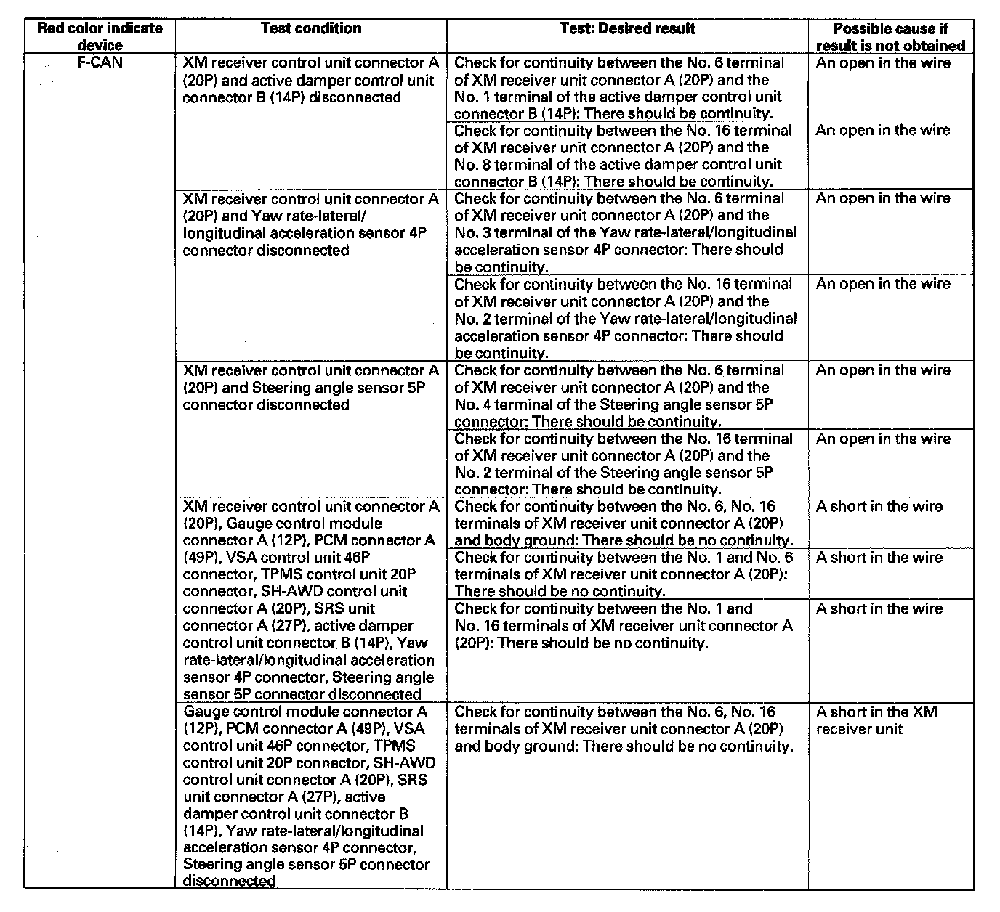
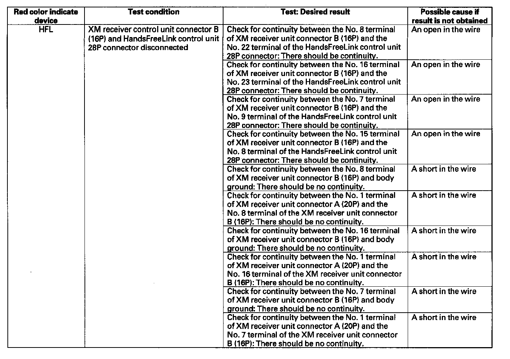

Self-Diagnostic Function
Self-diagnostic FunctionNOTE: Only select "DATA RESET" from the "XM (HIP) ECU" screen when instructed. Selecting "DATA RESET" will clear the AcuraLink registration, and the AcuraLink service will reset to the factory default. If the vehicle was already registered for the AcuraLink service, it will have to be reactivated by calling Acura Client Services before all features will be available.
The AcuraLink control unit (XM receiver) has a self-diagnostic function. To run the self-diagnostic function, do the following:
How to Enter the Self-diagnostic Function
NOTE: Always check for and repair any B-CAN or F-CAN DTCs before troubleshooting the AcuraLink system.
1. Turn the ignition switch ON (II).
2. Press the interface dial.
3. Press and hold the MAP/GUIDE, CANCEL, and MENU buttons at the same time for 3 seconds more, and the self-diagnosis will begin.
4. Using interface dial, select the "NAVI System" from the "Select Diagnosis Items". Press the interface dial. The display indicates "NAVI System Link", and will perform a Navi connection check for each device. If a connection is faulty, the place where it is faulty will be indicated with "NG" (red color). If "XM (HIP)" indicator is "NG" (red color), go to step 5.
5. Using the interface dial, select the "Return" from the "Navi System Link". Press the interface dial.
6. Using the interface dial, select the "XM (HIP)" from the "Select Diagnosis Items". Press the interface dial.
7. Using the interface dial, select the "XM (HIP) System Link" from the "XM (HIP)". Press the interface dial. The display indicates "XM (HIP) System Link", and will perform an AcuraLink connection check for each device. If a connection is faulty, the place where it is faulty will be indicated with "NG" (red color).



8. When a red color is indicated, check the continuity between the XM receiver unit and the device indicated in red.
9. If the indication does not go away, confirm DTCs, and refer to the relevant system troubleshooting and input tests.
Canceling the Self-diagnostic Function
1. Use the interface dial, select the "Exit Diag". Press the interface dial to cancel the self-diagnostic function.